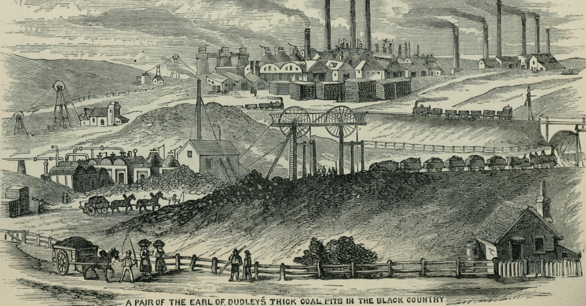
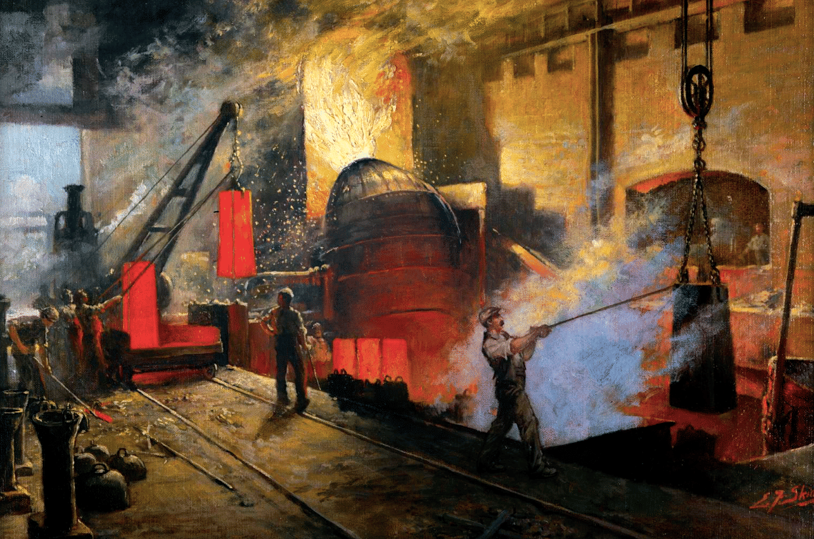
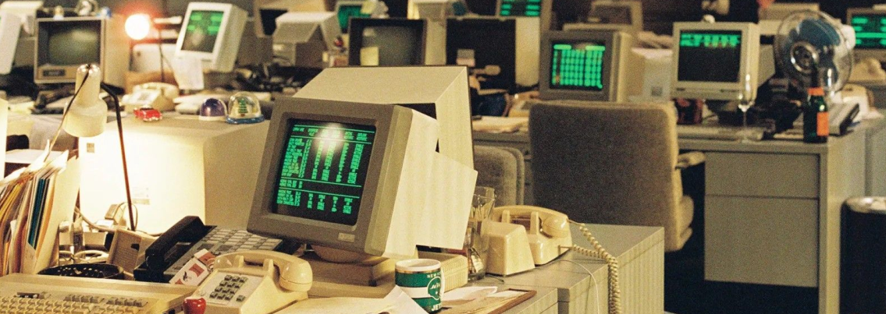
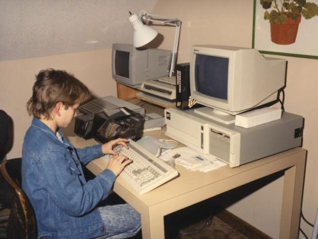

Muito além do aquecimento, o fogo permitiu o cozimento de
alimentos — o que ajudou no desenvolvimento do cérebro
humano — e ampliou a socialização, reunindo os primeiros
grupos ao redor das chamas.
Entre 1 milhão e 400 mil anos atrás — momento decisivo para
a sobrevivência e evolução humana.
Tudo começou na Pré-História com o domínio do fogo, a primeira
grande tecnologia da humanidade, que garantiu sobrevivência,
luz e alimentação cozida. A partir desse marco, o ser humano
passou a moldar o mundo ao seu redor: desenvolveu ferramentas
de pedra lascada, inventou a agricultura e, mais tarde, criou
a roda e a escrita na Antiguidade. Essas inovações transformaram
grupos nômades em sociedades urbanas e conectadas pelo comércio.
A Era Industrial: A Força das Máquinas e da Eletricidade

A Criação
Durante séculos, a força humana e animal moveu o mundo, até que
o século XVIII trouxe a Primeira Revolução Industrial. A introdução
da máquina a vapor substituiu o trabalho artesanal pelas fábricas.
No século XIX, o domínio da eletricidade e a criação do motor a
combustão interna aceleraram o ritmo do planeta, dando origem aos
automóveis, aos telégrafos e à iluminação pública, encurtando
distâncias geográficas.

A Segunda Revolução Industrial elevou o potencial tecnológico
a um novo patamar:
Eletricidade e Iluminação:
o domínio da energia elétrica revolucionou as indústrias
e transformou a vida urbana.
Motor a Combustão e Petróleo:
os automóveis e a aviação comercial deram uma nova dinâmica
de velocidade ao planeta.
Produção em Massa e Aço:
a fabricação em série ampliou a produção e reduziu custos.
A Revolução Digital: Computadores e a Internet

World Wide Web

O grande salto de conectividade aconteceu na década de 1990
com a abertura comercial da Internet e a criação da World Wide
Web (WWW). A rede mundial de computadores transformou a sociedade.
Sites, buscadores e serviços digitais aproximaram pessoas,
empresas e instituições, tornando a troca de informações mais
rápida e acessível.
Criou novas formas de mídia, transformando o fluxo de notícias,
entretenimento e comunicação pessoal em algo instantâneo.
Também democratizou o acesso ao conhecimento, permitindo que
pesquisas, conteúdos educacionais e descobertas científicas
circulassem pelo mundo em poucos segundos.
A partir de meados do século XX, a humanidade começou a migrar
da força mecânica para a manipulação da informação. O estopim
dessa era foi a invenção do transistor em 1947, um componente
eletrônico minúsculo que substituiu as antigas e pesadas válvulas.
Isso permitiu a miniaturização dos circuitos e o nascimento da
ciência da computação. Os primeiros computadores, que antes
ocupavam salas inteiras e serviam apenas para fins militares
ou científicos, evoluíram para os computadores pessoais nas
décadas de 1970 e 1980, chegando às casas e escritórios.
A Era Hiperconectada: Smartphones e Inteligência Artificial
Internet das Coisas
No século XXI, a tecnologia deixou de ser uma ferramenta que
acessamos em um lugar fixo e passou a ser uma extensão do próprio
corpo. A revolução dos smartphones, consolidada a partir de 2007,
reuniu em um único dispositivo de bolso as funções de computador,
câmera, mapa, carteira e central de comunicação. A expansão das
redes móveis e a computação em nuvem criaram uma infraestrutura
onde dados do mundo inteiro são processados em tempo real.
Hoje, vivemos a fronteira da Quarta Revolução Industrial,
caracterizada pela fusão dos mundos físico, digital e biológico.
Os principais pilares dessa fase atual são a inteligência
artificial, os dispositivos conectados e a biotecnologia.
Essas tecnologias conectam pessoas, máquinas e informações,
tornando os processos cada vez mais rápidos e inteligentes.
Inteligência Artificial (IA):
sistemas que aprendem com dados para automatizar tarefas
e criar conteúdos sozinhos.
Biotecnologia:
manipulação do DNA humano para curar doenças e prolongar a vida.